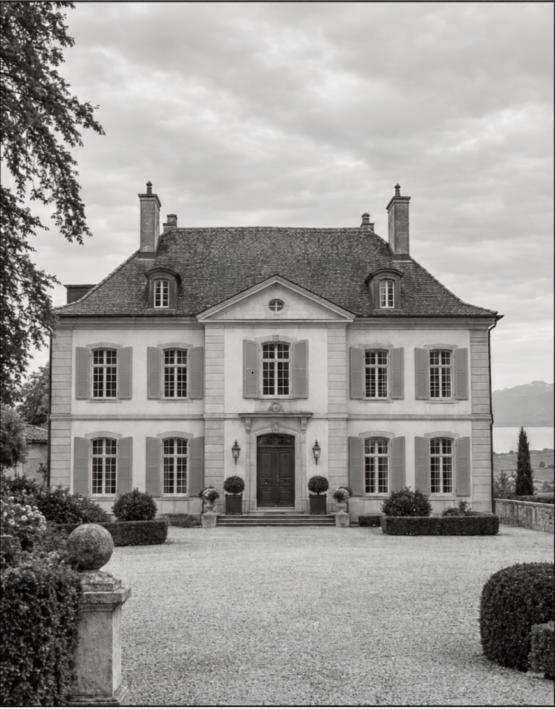

Partez serein. Votre compagnon reste chez lui, choyé comme un roi.
Fini le chenil, la cage et la boule au ventre. Avec Maison Faune, je suis votre unique interlocuteur. Je viens chez vous une à deux fois par jour et, pour les forfaits, je vous envoie chaque jour une courte vidéo de votre compagnon, directement sur votre téléphone.
Maison Faune est une conciergerie dédiée à offrir des services exceptionnels pour vos animaux de compagnie sur Sisteron et sa région. Que vous ayez besoin de promenades quotidiennes, de soins attentionnés ou de visites régulières, je traite vos protégés comme des membres de la famille.

Maison Faune et ses engagements
Le départ en vacances ne devrait pas se vivre la gorge serrée
La valise est prête. Lui, il vous regarde. Il sait. Et vous cherchez déjà une solution : le chenil (bruit, box, stress), le voisin qui « passera si possible », la famille qui commence à se lasser.
Votre animal n’est pas un colis. Il a ses rituels, son canapé, son odeur, ses horaires. La plus grande inquiétude pour lui, c’est le changement. Alors je viens à lui, pour ne pas modifier ses habitudes.
Pourquoi une conciergerie pour vos protégés ?
Parce que je m’occupe de tout ce dont votre compagnon a besoin quand vous n’êtes pas là : la garde, la promenade, le transport, les courses. Du chat au furet, du chien à la tortue, et pour vos équidés, chacun d’entre eux mérite un service sur mesure.
« Ils gardent leurs repères, et vous retrouvez votre liberté d’esprit. »
Une présence attentive, dans le respect de ses habitudes
- Chez lui, avec ses habitudes. Avec sa gamelle, son panier, ses horaires et, surtout, une présence attentive et affectueuse.
- Des nouvelles chaque jour. Pour les forfaits 7 jours, une courte vidéo vous est envoyée quotidiennement, par WhatsApp ou SMS selon votre choix : vous le voyez manger, jouer, ronronner ou pâturer.
- Un seul visage. Le même intervenant vous accompagne du début à la fin. Pas de rotation, pas d’inconnu.
- Qualifications officielles. Titulaire de l’ACACED (chiens, chats et autres animaux de compagnie d’espèces domestiques) et du certificat de compétence pour le transport d’animaux vivants (TAV). Cela ne remplace pas un vétérinaire : au moindre doute, votre vétérinaire est contacté.
- Votre maison n’est pas oubliée. L’option Maison Veillée comprend le courrier, l’arrosage des plantes, la gestion des volets et un contrôle visuel simple. Il ne s’agit ni de gardiennage ni d’une garantie anti-cambriolage.
- Joignable 7j/7. Chaque jour, de 8 h à 20 h, je réponds à vos messages et partage les nouvelles de vos compagnons. Pendant votre séjour, une ligne directe reste accessible à tout moment en cas d’urgence ou d’imprévu sur votre trajet de retour.
- Une exigence de terrain. Trente ans de protocoles, de ponctualité et de zéro improvisation, pour le bien-être de votre compagnon.